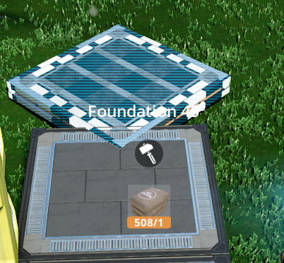

I would love to have sloped versions of the natural foundatrions  they provide pretty good decoration design
they provide pretty good decoration design 
Upside Down Foundations and more
1 Like
Nice… I will make them in Ramp 8m x 4m. Thanks
1 Like
might be a good idea (if possible) to add them as unlock with tickets
1 Like
Greetings, I am having trouble running the mod. I am trying to run it on the latest experimental branch but it seems not to be available in my build gun.
All my other mods are working as expected.
1 Like
Hi Eric!
In the milestones on the hub, sometimes they are hidding and have to scroll to the right. Please, see if thats the case.
Yes, there it is. Did not see the scroll bar on Tier 0.
Thanks for the great mods and support.
1 Like
Hi Eric… Im glad that you like the mods!!! 
Im talking to Andrei from Foundation Industries, and we going to merge the two mods in one, its going to be much better.
Until there, see if you can re-install the mod… Its supposed to have 3 new Milestones Unlocks on Tier 0,1 or 2 (Upside down Foundations, Nature Foundations, More Foundations)
This is one of the top mods I’m using. But it is really helpful to get the (Vanilla) Foundation in 45° and (maybe) 22,5° (horizontal). Or are there already some available?
1 Like
Hmm… that would be nice, i heard that Andrei from Foundation Industries are trying something in this way.
Thanks for your reply.
1 Like
Thanks for the latest version of this mod. It become better and better. And, of course, there’re now a foundation with 45° available. But it has an issue. If I want to place it I see the correct preview but after the klick it’s the wrong foundation.
Please see the attachments.
Love the mod. Thanks for all your hard work.
There are two I’d like to see added. One is an 8x4 ramp with holes to pass pipes through. And regular 8x4 foundations you can pipes through. Cheers.
I’d love to see other types of foundations in the future. For example different radius and size halfpipes and maybe circular foundations in different sizes (2m, 4m, 8m, 12m, 16m, … diameter) with fitting walls that got the right angle to attach to the circle.
Love your foundations, will you add flowing water, left river bank, right river bank, and waterfall foundations, vertical and horizontal for water gardens please Andre?
Also a triangular foundation (half a square) and a one meter high wall (1/4 the height of a regular 4m high wall) thanks Andre.
can I turn the foundation so that the glass side is on top?
thx
Carsten
These spawn a world-grid-aligned vanilla foundation at their denoted angle. They can function as an alignment seed to aid world-grid-aligned construction. Any player hologram rotations are consequently ignored.
You can unlock this foundation (Glass Foundation 8m x 1m) via that Awesome Shop in vanilla Satisfactory.
Continuing the discussion from Upside Down Foundations and more:
Hello everyone and thanks for your amazing mod.
I came here just to report that I updated to version 0.2.2 of the mod and it broke all my glass ramps. There is an offset of one unit up for all already placed ramps, and newly placed ones also fit with this offset. This might also affect other ramps/foundations, I had to rollback to 0.2.1 to get it back working as intended.
1 Like
Thanks for reporting. Looking into this now.
Edit: Fixed in updated 0.2.3.
1 Like